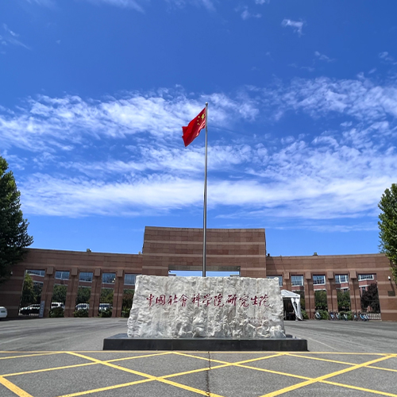

了解我们的活动
最新学术活动简讯

2023年6月7日下午，社科法研第十三期学术沙龙在法学院模拟法庭顺利举办，本期学术沙龙的主题为拐卖妇女案中的法律问题。法学院副院长柳建龙教授作为点评嘉宾出席本次沙龙，同时，沙龙也吸引了不同学科方向的同学旁听并参与讨论。本次学术沙龙由法学院2021级环境法学博士研究生苗振华同学主持。 首先，柳建龙教授对举办沙龙的背景和初衷做了简单的介绍，他从三个方面指出针对具体案件或者社会事件展开讨论，可以推动法学院教师与学生之间以及跨学科的本硕博同学之间的学习交流，创造良好的学习氛围，促进法学院同学做进一步的研究。 随后，21级刑法学博士生杨滨蔓同学围绕本次主题，就买卖不同罪的法律适用做了简要的总结汇报，并围绕修法争议提出了自己对相关理论的思考。21级刑法学博士生雷达同学就虐待罪是否成立分享了自己的看观点和依据；22级刑事法学直博生刘恒源同学分享了收买妇女儿童罪量刑上的一些思考；22级民法学博士生王风瑞同学就前面几位同学的观点做了回应，并提出了新的思路；21级刑法学硕士生王子涵同学就首先进一步回应了老师和同学的观点，随后对案件量刑的具体情况分享了自己的思考。 21级民法学博士生王照飞同学从心智残障者结婚的效力及权利保障的角度切入，为大家提供了新的讨论方向；22级民法学博士生王风瑞同学从理论和现实的角度为大家深层梳理了事件的原因，并就婚姻和生育的关系问题分享了自己的看法；21级刑事诉讼法学硕士生宋朗同学结合本专业知识，从追诉模式的角度谈了对虐待罪和保护妇女权益的思考；21级宪法学与行政法学博士生何陈爽同学从人的基本权利角度，对本案中国家尊重和保障人权分析了自己的观点；21级宪法学与行政法学博士生李文杰同学从行政机关失职的角度分析了此类案件可能仅是冰山一角；22级宪法学与行政法学博士生汪偲同学就《宪法》中人格尊严条款谈了自己对于本案的思考。 在此期间柳建龙老师对同学们的想法和观点进行点评并交流相关疑问，自由讨论环节几位旁听同学也积极参与提问互动。 最后，柳建龙教授做总结性发言，他主要从宪法方向角度对案件做了点评，并对同学们提供的不同专业角度与积极交流做了肯定。通过与老师、同学们相互的思想碰撞，大家获益匪浅。至此，本次沙龙圆满结束。
王继煜
2023-06-11

2023年4月19日中午，“社科法研”第十二期学术沙龙（主题：《立法法》修改——发展与问题）在法学院图书馆顺利举办。本次学术沙龙由法学院2021级宪法学与行政法学硕士研究生王继煜同学主持，宪法专业以及其他专业的博硕士生研究生参与讨论；点评嘉宾法学院副院长柳建龙教授、江辉讲师，以及法学院执行院长吴用教授、黄钰洲讲师出席了本次沙龙。 首先，柳建龙老师对举办沙龙的初衷做了简单的介绍。他指出可以借鉴比较成熟的读书会或者沙龙的形式，针对法律草案或者新通过和修订的法律以及社会事件展开讨论，进而推动法学院教师与学生之间以及跨学科的本硕博同学之间的学习交流。 随后，21级宪法学与行政法学专业硕士生张永泉同学围绕本次主题做了简要的背景和内容介绍，并提出了自己的想法与疑问。 22级宪法学与行政法学专业硕士生的霍嘉同学、徐俊雨同学、21级宪法学与行政法学专业博士生李文杰同学、何陈爽同学、21级宪法学与行政法学专业硕士生郝嘉祺同学、王继煜同学从不同的角度，针对《立法法》的不同条款依次发言。 在此期间柳建龙老师与江辉老师对同学们的想法和意见进行点评并解答相关疑问，自由交流环节旁听同学也积极参与讨论。 最后，江辉老师做总结性点评，他在肯定沙龙选题意义与形式的基础上，指出同学们做学术研究应该立足实际问题，脚踏实地，并就开展相关研究分享了自己的经验。通过与老师、同学们相互的思想碰撞，大家获益匪浅。至此，本次沙龙圆满结束。
王继煜
2023-04-26

2022年12月15日，由社科法研主办的第十一期学术沙龙通过腾讯会议顺利举行。法学院2022级法律硕士研究生陈龙为以“论新冠疫情期间地方政府“赋码”的合宪性及正当适用对策——基于洛克《政府论》中的“特权”理论视角”为题进行了报告。法学院柳建龙副教授、法学所朱学磊助理研究员受邀作为专家评议人。此外，法学院李文杰同学、郝嘉祺同学、张永泉同学、关伟杰同学、徐俊雨同学分别进行了点评。本次学术沙龙由法学院2021级诉讼法学硕士研究生杨健主持。 报告首先阐述了新冠疫情期间地方政府赋码行为的合宪和合法依据并认为《宪法》中的“紧急状态”规定能够和《突发事件应对法》《传染病防治法》等法律一起为地方政府“赋码”行为提供合宪合法依据。而后，报告又分析地方政府在“赋码”时所采取的手段方面存在“过限”行为，并导致层层加码和乱赋红码等问题出现。并针对该问题，报告又通过洛克《政府论》中的“特权”理论，认为在突发事件下，公权力如果需要紧急扩张时应当满足三个原则即“自卫权”保留原则，条件紧急性原则和福利目标优先原则。最后，报告归纳这些原则并提出地方政府应当在“赋码”时积极接受公众的监督和问题反馈，积极改正赋码过度带来的问题，要遵循宪法和法律，有限度地开展赋码工作，落实好“举证”工作，准确分析社会态势并向公众传达所采取举措的合理合法性。 在学生评议环节，2021级宪法学与行政法学博士研究生李文杰同学分别从论文的引用、论文的结构和论证的逻辑三个角度提出了疑问，并给出了修改建议；2021级宪法学与行政法学硕士研究生郝嘉祺同学首先肯定了文章选题，随后建议文章结构采取提出问题分析问题解决问题的思路，并指出对文章部分内容持保留意见；2021级宪法学与行政法学硕士研究生张永泉同学肯定了文章关注社会热点问题，随后指出文中错别字、语病等规范的问题，并对参考文献给出了完善意见，认为文中有关基本权利的理论知识储备有待加强；2022级法律硕士研究生关伟杰同学详细分析了文章的三方面优点，随后从选题的时效性和相应理论阐述方面指出了不足之处；2022级宪法学与行政法学硕士研究生徐俊雨同学首先对摘要中引起歧义的地方提出了自己的疑问，随后对文章提出的问题和相关分析给出了具体的建议。 在老师评议环节，柳建龙老师指出文章的选题契合社会现状，但文章的写作目标需要进一步明确，并提出结合内容和结构来看文章中缺少过渡和进一步分析，而且在文章层面上需要再提出解决方案，有待进一步完善，最后柳老师指出文章错别字、标点使用以及标题措辞的一些问题，建议同学们多关注学术讲座和学者的文章。朱学磊老师认为柳老师和同学们的建议都很好，在学术交流场合提出问题对于报告人进一步完善文章是非常有益的，随后指出了文章具有的问题意识和“特权”理论运用角度、形式层面和实质层面分析相结合等的闪光点，最后从紧急状态概念、分析框架、行文表达、文献整理等角度给出了细致的建议，希望文章能把原理性的思考和规范层面的思考，以及对制度和实践的关怀更好的结合起来。 评议环节之后，陈龙为同学对老师和同学们的点评进行了简要的回应，他表示受益匪浅。到此，第十一期“社科法研”学术沙龙圆满结束。
王继煜
2022-12-19
2022年11月25日下午，由社科法研主办的第十期学术沙龙暨中国社会科学院大学2022年研究生科研创新支持计划学术报告会（项目编号：2022-KY-35）通过线上会议方式顺利举办。中国社会科学院大学法学院2020级诉讼法学博士研究生王燕芳作了题为“刑事诉讼管辖异议权的理据、类型与审查”的学术报告。本次报告会由中国社会科学院大学2022级硕士研究生李广钊主持，中国社会科学院大学法学理论博士生周一博、诉讼法学博士生史达、环境与资源保护法学博士生苗振华、诉讼法学硕士生徐超轶、诉讼法学硕士生林玉东分别进行评议，中国社会科学院大学法学院程捷副教授进行总结性点评。 王燕芳同学从“法官谋杀院长”案和“河北秦皇岛两法院共同管辖”案切入，介绍了选题的意义和价值。随后她指出论文研究的主要内容是从诉讼条件理论出发，探索构建管辖异议权的程序机制，解决管辖异议引发辩审冲突造成诉讼拖延的问题。她指出论文主体包括四个部分：第一部分阐述了管辖异议权是一项针对公正审判权的救济性权利，管辖的基本原理是法定法官原则；第二部分将刑事诉讼管辖异议权分为变更管辖申请权和管辖错误异议权两类，并阐释了二者功能上的差异决定了其规范设计的不同；第三部分介绍了美国、德国、日本以及我国台湾地区对管辖的审查模式，深入论证了前置性解决管辖问题，形成具有效力的管辖异议裁决的必要性与可行性；余论主要探讨了立案管辖是否应当设置为诉讼条件以及如何规制立案管辖错误的问题。 在王燕芳同学完成报告后，法学理论博士生周一博，诉讼法学博士生、硕士生史达、徐超轶、林玉东、李广钊，环境与资源保护法学博士生苗振华分别对报告进行点评。 周一博同学从论文编辑角度对文章的词语表达、行文格式方面提出建议。 史达同学从文章主体结构和比较法材料整合方面为文章进一步修改提供了思路。他指出应当在第一部分的开头对管辖异议权的意义进行阐述，进而过渡到管辖异议权的理据；对于文章中的案例可以尝试改编后，从诉讼标的单一性、同一性理论进行分析。 徐超轶同学从变更管辖申请权和管辖错误异议权在程序上是否应该有所不同、庭前审查与庭前会议裁断管辖异议的比较，必须修改刑事诉讼法赋予管辖异议权还是可以从现行刑事诉讼法解释出来等方面发表了自己的见解。 林玉东同学指出应当从管辖异议联系到整个刑事诉讼程序性事项的处理，构建一套完整的针对程序性事项的抗告或复议制度。 苗振华同学从管辖的分类、管辖与回避的区分等方面发表了自己的看法；李广钊同学就网络犯罪的管辖宽泛问题、认罪认罚从宽案件的管辖权异议适用问题提出了自己的疑惑。随后，王燕芳同学对各位评议人提出的问题予以一一回应。 程捷老师做总结性点评。首先，他在肯定选题意义的基础上，指出做比较法研究应该立足中国实际，处理好国内与国外、应然与实然的关系，法官法定原则作为舶来品，引入中国需找到实在法的依据。其次，他强调研究管辖问题的思路不能只在诉讼法，应当从宪法学基本理论出发，考虑到宪法性基本权与法律保留的关系，进而解决管辖异议的定性问题。最后，他以法定法官原则在德国的发展为例，就做学问如何做到小选题大视野分享了自己的经验。 至此，第十期学术沙龙暨研创学术报告会圆满结束。
王继煜
2022-12-01